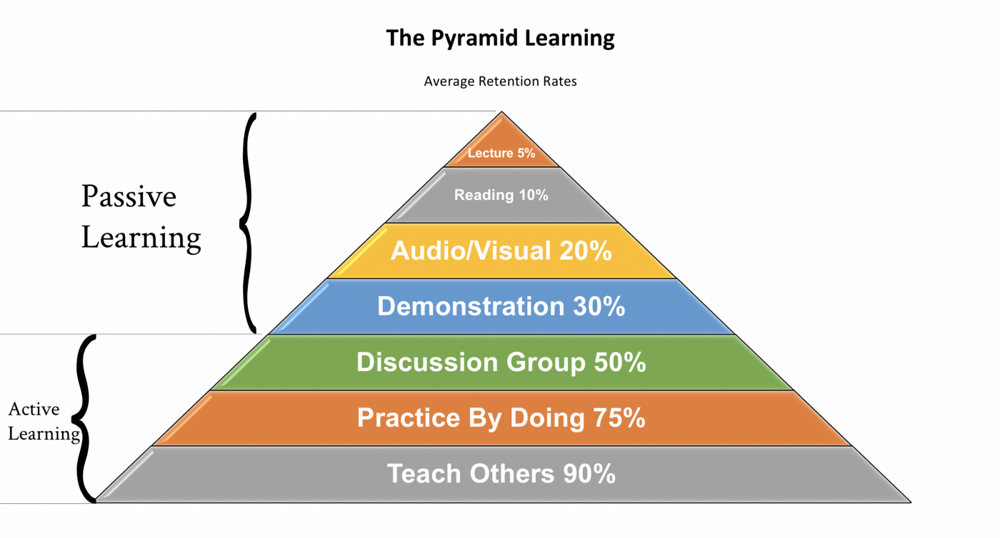

序言
也许读者看到这个标题的时候是不是觉得作者要走鸡汤路线了？其实完全不是，写这篇文章的原因有两个。一个是最近某些大厂裁员其中有些当事人就是笔者的前同事，另外一个是这个方面作者也确实有些愚见，故而借这个机会跟大家絮叨絮叨。标题当中说的工作自由并不是工作时间上的自由分配，更多的是指自己能够完全把控自己的职业方向。举个例子，如果你已经过了35岁的年纪还需要通过自己投简历来找工作的话，那显然是没有实现工作自由的。有些事情看似合乎情理的结果，其实如果你仔细推敲就会发现在过程中当中还是有一些常人没有太注意的细节的。换句话说如果你想达到工作自由，那就需要你在前期做大量的铺垫和努力。下面就从我自己的理解来谈谈对这方面的一些看法。
正确地选择技术栈
选择大于努力，在错误的道路上即使再努力最终也只能是南辕北辙。对于我们搞技术的人来讲，选择一个正确技术方向显得尤其重要。那么如何选择靠谱的技术栈呢？最直观的就是看行业，然后再细分行业里面的技术。当然，这里面的技术也有高低之分。以笔者为例，当初是误打误撞进了云计算的行业，并且选择了虚拟化的技术。正是借着云计算这个高速发展的行业背景，笔者才能有幸到目前还能有份稳定的工作(不会为明天是否被裁员而担心)。当然，云计算行业里面需要的技术也不仅仅是虚拟化，比如说管控、内核、网络、存储等，这些技术当中有的门槛低有的门槛高。以笔者的经验来讲，当一个公司的业务高速发展的时候技术门槛的高低并不会对员工有直接的影响，因为快速增长的业务需要大量的人干活。也就是说业务的高速发展掩盖了这些问题，但是当业务增速放慢或者说停止的时候，那这个就有影响了。远的不说，就说最近的某大厂的这波裁员操作吧，如果你仔细看一下那些被送"大礼包"的同学基本上是做一些技术门槛相对比较低的开发人员，而那些门槛相对比较高的技术人员没有或者说很少被裁。这背后的逻辑总结起来就是被替代性的高和低。所以，如果你想实现工作自由，那第一步就是选择一个朝阳行业或者说还在上升期的行业，然后在这个行业里面选择一项门槛相对比较高的技术。 那有人会问如何才能选到正确的行业呢？其实也比较简单，看看政府的相关规划看看国家下一个五年的okr，基本上能够get到一些有用的信息。找到你感兴趣的行业之后，在翻翻这个行业当中涉及到的核心技术。比如你可以通过论文、会议或者一些专业机构比如gartner技术曲线来获取关键信息。
赢得行业内的认可
如果你已经在正确的行业里面开始了自己的职业生涯，首先要恭喜你可以进入下一个阶段了：在自己的岗位上做出成绩并赢得行业内的认可。做到这一步确实比较难，如果要做到业内的认可，首先你得先做到被周围同事认可。以笔者的经验来说，如果想要得到周围人的认可这几个要素少不了 - 靠谱 我记得有人说过靠谱是比聪明更加可贵的品质，这句话说的一点也不假，甚至笔者认为靠谱是对一个人的最高评价。靠谱的人往往比其他人更容易获得一些机会和资源。怎么讲呢？比如你是一个leader，现在一个比较重要的项目你是交给一个靠谱的人呢还是一个只会吹嘘不干实事的人呢？答案当然是前者。那怎么培养靠谱的品行呢？笔者认为要有意的去培养以下这几个方面的行事做风。 - 说到做到 在职场有一个原则就是如果应下了这项任务那你就必须要能够在规定时间内保质保量完成。当然有些人会问如果没有完成怎么办？问这些问题的人从一开始就没有想清楚自己是否能够完成或者说在能力上能否胜任这项业务。有些人可能会觉得既然别人都找到你了，如果直接说没能力完成会不会很丢脸。笔者年轻的时候也会有这种想法，后来被现实多次教育之后就开始醒悟了。如果因为你一时的面子导致某些重要产品delay或者上线之后产生重大稳定性事故，那这个时候可能就不止是丢面子的问题了，严重的可能就要卷铺盖走人了。所以，做承诺之前，一定要考虑清楚，是否能给出承诺。若不能，坦诚地解释原因，然后优雅地拒绝；如果答应了，无论过程有多困难，即便是会损害到自己的利益，也一定要兑现。 - 执行力强 较强的执行力是每个靠谱的人必备的良好品格。就是说一件事交给他你完全不用担心，他一定能在规定的时候内给你一个结果。即使中间出现了一些不在预期之内的异常他也能够及时地让你感知到并能给你一个可行的方案。 - 实事求是 这四个字说起来简单但做起来并不是那么容易。主要是在职场它夹杂了太多其他的东西比如我们常说的"山头"、“蛋糕”、“势力范围”等，当这些东西被掺入到其中之后，这四个字就变的没有那么简单了。所以，一般能够做到实事求是的人往往都是正值无私的，这样的人也最容易得到别人的器重和认可。 - 乐于助人 如果你仔细观察你周围的同事的话，你会发现那些愿意帮助别人解决问题的人最终都会成长为你们团队当中最受其他同事爱戴的人或者说大家都比较认可的人。如果你在工作中经常帮助其他同学解决问题，那团队其他同学久而久之就自然对你产生了依赖并最终认可你。当然这样的同学技术也不会太差，因为帮助别人解决问题也是加快自己成长的一种行之有效的方法。所以，建议大家在自己能范围内多去帮助团队里面的其他同学，每帮助别人解决一个问题那就增加了一份别人对你的认可。 得到周围同学的认可之后，那我觉得你可以尝试一下在行业内拿到一些confidence。从个人经验来看，搞技术的同学在这方面是比较容易突破的。有些方法可以参考，比如向社区贡献代码，参加行业内会议，跟学校合作论文等都是比较好的方法。当然，这里也不是教大家一些"终南捷径"，试想如果你拿着一些毫无干货的东西去硬刷存在感，那还不如不去。因为大家都是聪明人，刷多了可能大家也就无视你了，反而效果不好。其实很多东西都是水到渠成的东西，功夫到了事自然也就成了。
学会抬头看路
这句话是多年之前我的leader跟我说的一句话，我至今记忆犹新。其实，我直到几年前我才理解到这句的意思。就是一个人在一个行业呆久了，一定要抬起头看看这个行业当前的业务方向和技术趋势，避免技术层面的“近亲繁殖”和盲目自嗨。笔者这几年来面试了不少人，发现很多候选人都缺少这方面的认知。那么有哪些途径可以让我们更好地的把路看清呢？我想在这里介绍一下自己的一些经验，仅供参考： - 学会看论文，看影响因子比较高的期刊当中发表的著作。所以这时候英文阅读水平就显得的比较重要，当然笔者的英文水平也不怎么高，一开始使用google 翻译后面看多了之后慢慢地就上道了。另外，如果论文有配套的视频讲解的话那这样会更好，因为有些文章会写的比较专业并不是太好理解，而视频讲解相对来说会比较接地气一些，这样两者结合起来更加有注于对相关技术的理解。 - 关注行业顶会当中的topic，以笔者经常关注的会议为例，像hotchip、OSDI、ATC、NSDI、FAST 等每年都会有一些有意思的topic。通过这些topic基本上能够掌握所在行业的一些最前沿的技术趋势。 - 关注行业内的技术社区，有时候通过社区的相关patch能够比较快速的了解大家都在做哪些事情。 当你把这些事情变成日常习惯的时候，你会发现真的是受益无穷。这些收益不仅会提升你日常工作的水准而且能够极大的扩展你的知识面，让你在技术上游刃有余。
夯实基础，终身学习
不知道大家认不认可，业界的大牛一般都是比较有才华的人。那大家有没有想过什么叫才华呢？我最近从某本书看到这句话，它说：”所谓的才华，其实就是基本功的溢出“。我们往往只看到了别人的牛X的一面，却忽略了这些人比起我们花了更多的时间去磨炼基本功，去更加有深度和广度的去学习。说到学习就不得不说一下比较著名的学习金字塔模型，具体模型如下图的所示 
从图中可以看到学习方法大体分为两类，一类是被动学习即学习者是授体它包括听讲、阅读、音视频、demo演示等；另外一类是主动学习即学习者是教授者或者参与者它包括讨论、实操、教授其他人。从上图能够看的比较清楚，主动学习无疑是最佳的学习方法。关于主动学习，笔者也有一些经验仅供参考 - 主动在团队内部进行技术分享 经过笔者的实操并且验证过绝对是最高效的学习方法。因为一项技术你自己看懂比较容易，但是你如果你还能把其他人讲懂那就不太容易，因为大家的backgroud和知识体系各不相同，如果你想让大家都能够真正的吸收到你所讲的东西那势必要进行相关的抽象和架构浓缩，在这个过程你会发现你对这个技术本身的理解就会更加地深入。另外，就是在分享之后的讨论，这个讨论就是外界对你的一个反馈，这个反馈可以进一步地帮你修正你的理解。 - 学会总结，将知识系统化、图谱化 技术的东西会比较分散和碎片化，如果不能够做到系统化则相关的技术就不能被成功地吸收到你自己的知识体系里面。比如提到虚拟化，你首先想到它可以分cpu虚拟化，内存虚拟化，中断虚拟化，io虚拟化，设备虚拟化。从cpu 虚拟化我们可以联想到vmcs， root and non-root，vmexit，io_bitmap，msr bitmap；从内存虚拟化自然而然就想到了EPT，VPID，pv tlbflush；谈到中断虚拟化那我们就能联想到apicv，irqfd，msix，irq_routing，irq remapping，posted interrupt；io 虚拟化则自然就想到mmio, pio，dma remapping；那提到设备虚拟化可能就会联想到virtio，pci passthrough， vfio，config space and bar空间等。这就是虚拟化的所有内容，找到关键点，然后顺着这个脉络一点点往下想，通过知识图关联就可以进行顺藤摸瓜。我们不需要记所有知识，像 intel spec 这里面的东西不需要记，你知道在哪里能找到就行。
小结
又到文章收尾的时候了，小结一下。如果你想实现工作自由，你需要能正确把握这个时代的技术趋势，并在这个技术圈子内不断提升自己的能力，同时打好基础并不断的学习来扩展自己的技术外延和对整个行业的认知，否则很容易掉队被淘汰。以上就是本人的一些愚见，希望能够对你有用。
于2022年8月16日杭州东开往北京南G40列车上